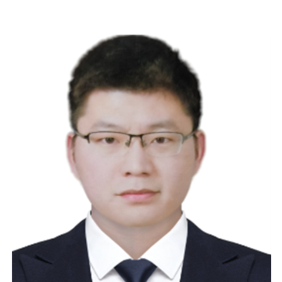
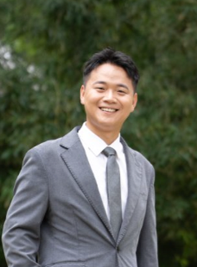

复旦大学高分子科学系博士，研究Self-driving Lab、AI for Materials等。
研究背景：
复旦大学高分子科学系博士，现任北京中关村学院导师。研究方向涵盖Self-driving Lab、Materials Science、AI for Materials、Synthesis、Polymer、Battery等领域。作为第一作者和共同第一作者在Nature、Angewandte Chemie、Advanced Materials等期刊上发表SCI论文7篇，合作发表论文18篇。致力于通过机器人技术、人工智能、先进材料和绿色化学工艺的结合，推动可持续能源技术的发展。

杜红伟点击详情
北京中关村学院导师
上海交通大学博士，研究方向AI for materials，具有BMS嵌入式软件开发经验。
研究背景：
上海交通大学博士，主要研究方向是AI for materials。工作期间主要在长安/CATL从事BMS（电池管理系统）嵌入式软件开发工作，博士期间在上海交大汪洪教授课题组，主要围绕材料的组分基深度学习多目标性质预测模型设计，结构基的图神经网络的预测/势模型的设计验证，以及机器学习方法在储能材料理性设计和高通量筛选、验证中的应用。发表SCI期刊论文10余篇，包括DenseGNN、L-G-DCNN深度学习模型设计等。

贺鑫点击详情
北京中关村学院导师
理学博士，从事AI4S、功能材料多尺度模拟与量子化学动力学研究。
研究背景：
理学博士，北京中关村学院助理教授。主要从事 AI4S（人工智能赋能科学发现）、功能材料多尺度模拟与量子化学动力学研究，聚焦 AI 驱动的材料性质预测、结构靶向生成及激发态动力学加速算法开发。参与多项前沿科研项目，发表 SCI 论文 10 余篇（含 5 篇第一作者），获北京大学优秀博士论文等多项学术奖励。
博士毕业于北京大学王选计算机研究所，现就职于北京中关村学院及中关村人工智能研究院。主要从事AI for Science、科学智能体、文档分析与理解等方面研究工作。在 NeurIPS、AAAI、ICASSP 等相关重要国际学术会议发表论文十余篇，获国家发明专利授权2项，并参与国家重点研发计划、国家自然科学基金面上项目等多项重点项目。